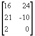
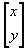
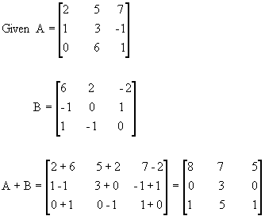
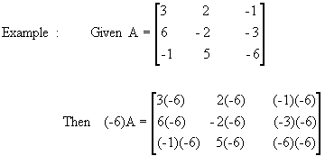
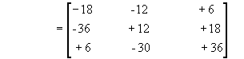
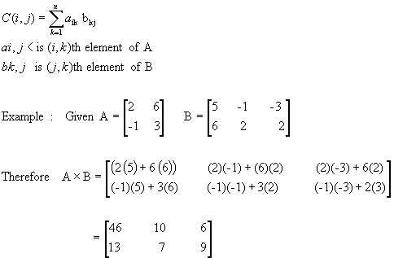
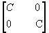
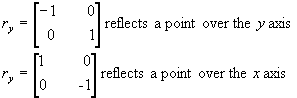
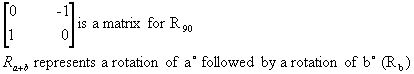
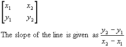

Matrix: A mxn (called a dimension of a matrix) matrix stores mn elements, in terms of rectangular array with m rows, and n elements in each row (or n columns).
A 3 x 2 Matrix is shown below:

Matrices are used to store data or to transform geometric objects.
Point matrix:A 2 x 1 matrix is called point matrix. Below is an example of a 2 x 1. The first row has a x value and the second row has a y value.

Addition of matrices: Given two matrices A & B of the same dimension, their sum A + B is the matrix whose each element is the sum (or subtraction) of the corresponding elements in A & B. See examples below:
Scalar Multiplication: The product of a matrix A with a scalar C, is the matrix CA where each element is C times the corresponding element of A.

Matrix Multiplication: Given a matrix A with dimension mxn and another matrix B with dimension nxr, the product C=A x B of matrices is mxr matrix whos element [element in ith row, jth column] is product of ith row of A and jth column of B.


Size Changes: A transformation Sc: (x,y) = (cx,cy), l is called the size change with center (0,0) and magnitude C. The matrix for Sc is:

Scale Changes: A transformation Sab: (x,y)=(ax,by) is called scale change with horizontal magnitude and vertical magnitude of b.

Line: A line passing through (x1,y1) and (x2,y2) can be represented by a 2 ´ 2 matrix as:
Theorem:Composite of matrices: If matrix M1 represents transformation T1 and M2 represents transformation T2, them M2M1, is the matrix for transformation for T2oT1